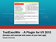

|
TestExecWindow
|
[Download and Installation] [User guide] [Internal Design]
Every time you change the startup project within your Visual Studio solution TestExecWin will automatically check if there are any test cases to run. All found test cases are presented within the TestExecWindow and can there be selected for execution.
|  | Start powerpoint web presentation |
TestExecWin online documentation:
Here you can first read detailed documentation without need for any download or installation
TestExecWin Windows help file:
Ready to use documentation with full search functionality. Before using you should download the file and copy it to a local hard drive to avoid problems with security settings. If main content is still invisible open properties window within file explorer and allow acccess to downloaded file.
TestExecWin at Visual Studio Marketplace ( version for VS 2019, version for VS 2017, version for VS 2015:
Short description and possibility for download.
 1.8.8
1.8.8